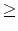
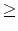

There is a minefield in front of your backyard and you do not want to make it your graveyard whenever you try to get pass through it! Your task is to find out if one can cross the minefield, from one corner to the opposite one, without blowing up within certain constraint on the walking distance through the field. In addition to the walking distance constraint, the only available information is a set of points in the minefield that are safe, i.e. places where you can put your foot on without activating a landmine. You can move from one safe point to another safe point if their distance is at most 1.5 meters far from each other.
The input consists of several test cases. Each test case starts with a line specifying the size of the mineland with two integers w
and h
separated by a blank corresponding, respectively, to the width and the height in meters of a rectangular landmine,
1  w, h 10000
. The next line specifies n
, the number of safe points, with
0 n 10000
. The following n
lines contain safe point coordinates x
and y
, separated by a blank, which are floating point numbers with
0 x w
and
0 y h
. The n + 1
line contains a floating point number
d  1.5
corresponding to the constraint on the walking distance. The end of the test cases is indicated with a line with one * character. All floating point numbers are given with exactly two decimal figures.
w, h 10000
. The next line specifies n
, the number of safe points, with
0 n 10000
. The following n
lines contain safe point coordinates x
and y
, separated by a blank, which are floating point numbers with
0 x w
and
0 y h
. The n + 1
line contains a floating point number
d  1.5
corresponding to the constraint on the walking distance. The end of the test cases is indicated with a line with one * character. All floating point numbers are given with exactly two decimal figures.
One line per test case, preserving the input order. Each output line corresponds to
I am lucky!
if there is a safe path of distance at most d
from (0, 0)
to (w, h)
, or to
Boom!
otherwise. You can always assume that the points (0, 0)
and (w, h)
are safe points.
5 4
7
1.00 1.00
1.00 2.00
2.00 1.00
2.00 2.00
3.00 3.00
4.00 2.00
5.00 3.00
8.50
5 4
8
1.00 1.00
1.00 2.00
2.00 1.00
2.00 2.00
3.00 3.00
4.00 2.00
5.00 3.00
5.00 4.00
7.90
*
I am lucky!
Boom!